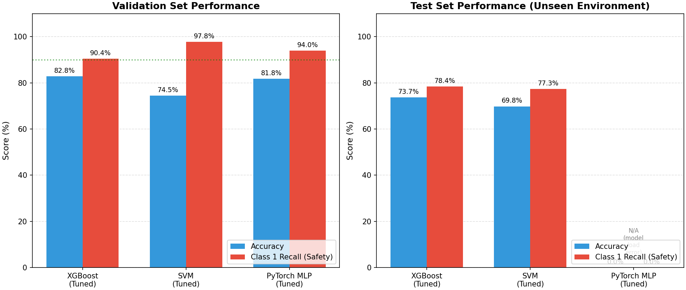
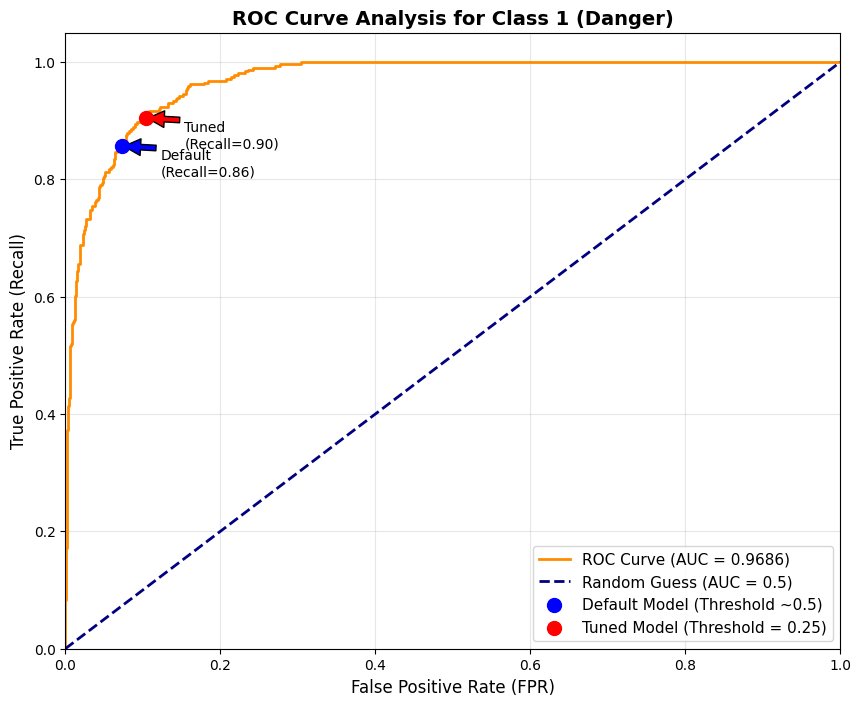
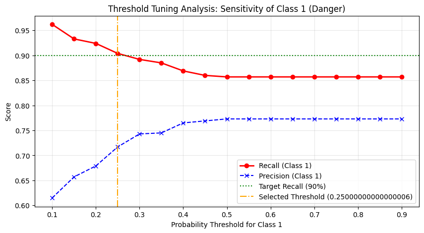
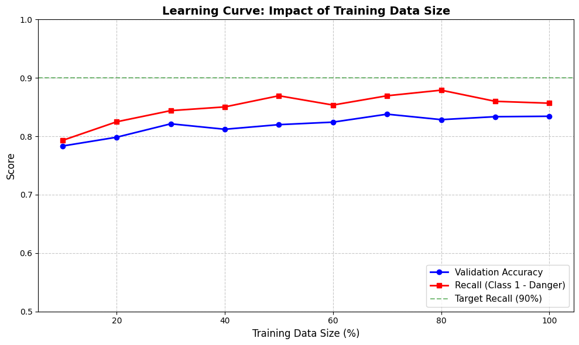
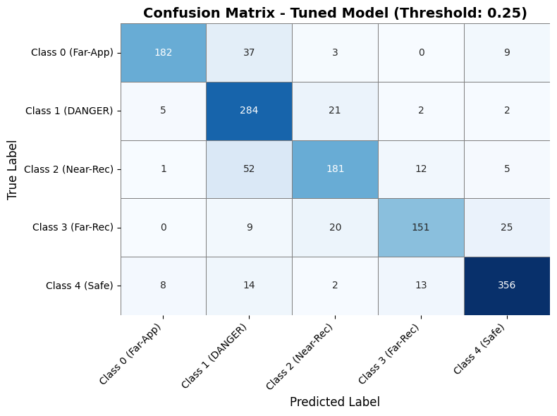
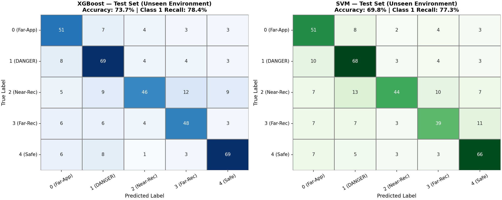

A multi-class audio classification system that estimates vehicle proximity from acoustic features, with safety-oriented threshold tuning to maximize detection of approaching vehicles in the danger zone.
Performance summary across three model families, evaluated on both validation and unseen test data.
The system classifies audio recordings into 5 classes based on the vehicle's distance and direction of travel.
A missed detection in Class 1 (danger zone) could cost a pedestrian their life. The threshold tuning strategy deliberately biases the model toward predicting Class 1 whenever there is meaningful probability — accepting more false alarms in exchange for fewer missed dangers.
Three model families compared on validation and unseen test data, with safety-oriented threshold tuning applied.
| Model | Accuracy | Class 1 Recall | Class 1 Precision | AUC | Note |
|---|---|---|---|---|---|
| XGBoost (Tuned) | 82.8% | 90.4% | 71.7% | 0.969 | Best Balance |
| SVM (Tuned) | 74.5% | 97.8% | 54.1% | — | Max Safety |
| PyTorch MLP (Tuned) | 81.8% | 94.0% | 70.7% | — | DL Baseline |
| Model | Accuracy | Class 1 Recall | True Positives | Missed (FN) | Note |
|---|---|---|---|---|---|
| XGBoost | 73.7% | 78.4% | 69 | 19 | Best Generalization |
| SVM | 69.8% | 77.3% | 68 | 20 | — |
| PyTorch MLP | N/A — Model load error (torch version mismatch) | N/A | |||

Figure 1: Validation vs. test performance comparison
The ~9% accuracy drop from validation to the unseen test environment is expected and reflects the domain shift between recording conditions. Despite this, XGBoost maintains a strong Class 1 recall (78.4%) even on unseen data, detecting 69 out of 88 dangerous events. This demonstrates reasonable real-world generalization while highlighting the need for environment-robust features in future iterations.
End-to-end pipeline from raw audio to safety-oriented classification.
Key figures from the experimental analysis.

Figure 2: ROC curve for Class 1 (Danger) detection — AUC = 0.969

Figure 3: Threshold tuning analysis — selected threshold 0.25

Figure 4: Learning curve — model converges by ~50% data

Figure 5: XGBoost confusion matrix (tuned)

Figure 6: Test set confusion matrices (unseen environment)
Research team and acknowledgments.
The authors gratefully acknowledge Dr. Moharram Mansourizadeh for his valuable guidance, supervision, and insightful feedback throughout this research project. His expertise significantly contributed to the design and refinement of the methodology.
یک سیستم طبقهبندی صوتی چندکلاسه که فاصلهی وسیله نقلیه را از ویژگیهای آکوستیکی تخمین میزند، با تنظیم آستانهی امنیتمحور برای بیشینهسازی تشخیص وسایل نقلیهی نزدیکشونده در منطقهی خطر.
خلاصهی عملکرد سه خانوادهی مدل، ارزیابیشده روی دادههای اعتبارسنجی و تست جدید.
سیستم recordingهای صوتی را به ۵ کلاس بر اساس فاصله و جهت حرکت وسیله نقلیه طبقهبندی میکند.
یک تشخیص از دست رفته در کلاس ۱ (منطقهی خطر) میتواند جان یک عابر پیاده را هزینه کند. استراتژی تنظیم آستانه عمداً مدل را بهسمت پیشبینی کلاس ۱ هرگاه احتمال معناداری وجود دارد متمایل میکند — هشدارهای کاذب بیشتری را در ازای خطرات از دست رفتهی کمتر میپذیرد.
سه خانوادهی مدل روی دادههای اعتبارسنجی و تست جدید مقایسه شدهاند، با تنظیم آستانهی امنیتمحور.
| مدل | دقت | ریکال کلاس ۱ | دقت کلاس ۱ | AUC | یادداشت |
|---|---|---|---|---|---|
| XGBoost (تیونشده) | ۸۲.۸٪ | ۹۰.۴٪ | ۷۱.۷٪ | ۰.۹۶۹ | بهترین تعادل |
| SVM (تیونشده) | ۷۴.۵٪ | ۹۷.۸٪ | ۵۴.۱٪ | — | بیشترین امنیت |
| PyTorch MLP (تیونشده) | ۸۱.۸٪ | ۹۴.۰٪ | ۷۰.۷٪ | — | پایهی DL |
| مدل | دقت | ریکال کلاس ۱ | تشخیص درست (TP) | از دست رفته (FN) | یادداشت |
|---|---|---|---|---|---|
| XGBoost | ۷۳.۷٪ | ۷۸.۴٪ | ۶۹ | ۱۹ | بهترین تعمیم |
| SVM | ۶۹.۸٪ | ۷۷.۳٪ | ۶۸ | ۲۰ | — |
| PyTorch MLP | ناموجود — خطای بارگذاری مدل (اختلاف نسخهی torch) | ناموجود | |||
شکل ۱: مقایسهی عملکرد اعتبارسنجی در برابر تست
افت ~۹ درصدی دقت از اعتبارسنجی به محیط تست جدید کاملاً طبیعی است و بازتابدهندهی تغییر domain بین شرایط ضبط است. با این وجود، XGBoost حتی روی دادهی جدید نیز ریکال قوی کلاس ۱ (۷۸.۴٪) را حفظ میکند و ۶۹ مورد از ۸۸ رویداد خطرناک را تشخیص میدهد. این نشاندهندهی تعمیمپذیری معقول در دنیای واقعی است.
پایپلاین end-to-end از صدای خام تا طبقهبندی امنیتمحور.
شکلهای کلیدی از تحلیل آزمایشی.
شکل ۲: منحنی ROC برای تشخیص کلاس ۱ (خطر) — AUC = ۰.۹۶۹
شکل ۳: تحلیل تنظیم آستانه — آستانهی انتخابی ۰.۲۵
شکل ۴: منحنی یادگیری — همگرایی تا ~۵۰٪ داده
شکل ۵: ماتریس آشفتگی XGBoost (تیونشده)
شکل ۶: ماتریسهای آشفتگی مجموعه تست (محیط جدید)
تیم پژوهشی و تشکرها.
نویسندگان صمیمانه از دکتر محرم منصوریزاده بابت راهنماییهای ارزشمند، نظارت علمی و بازخوردهای دقیق ایشان در طول این پروژهی پژوهشی قدردانی میکنند. تخصص ایشان بهطور چشمگیری در طراحی و اصلاح روششناسی مؤثر بوده است.